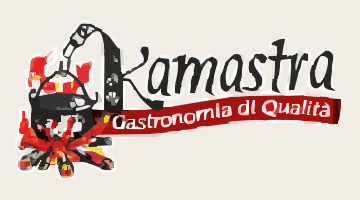
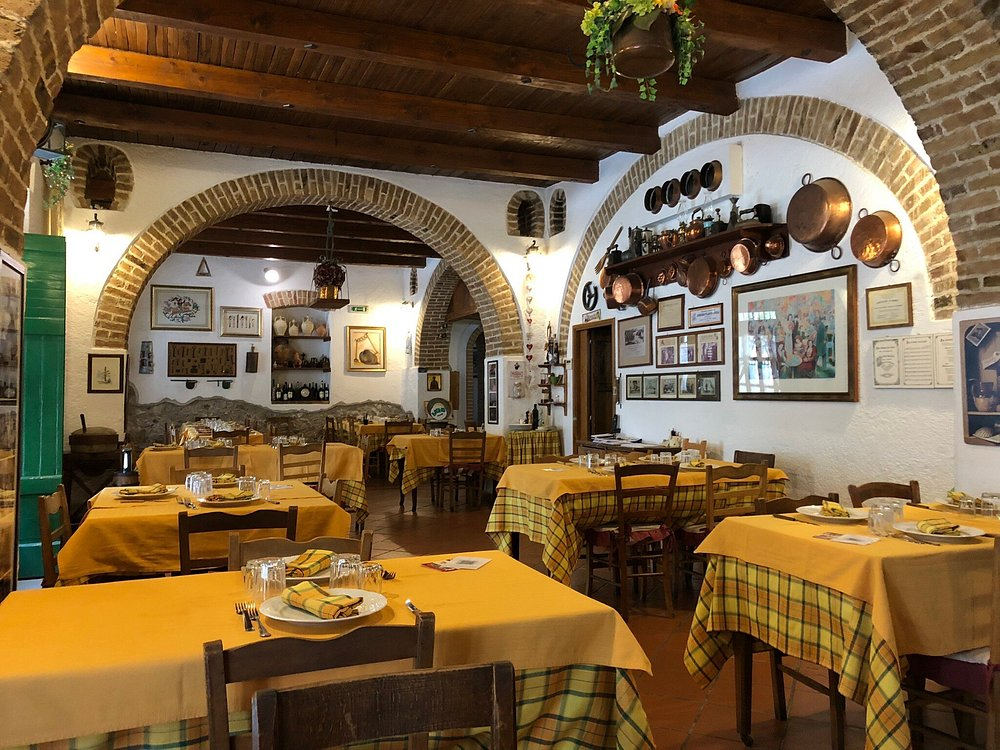
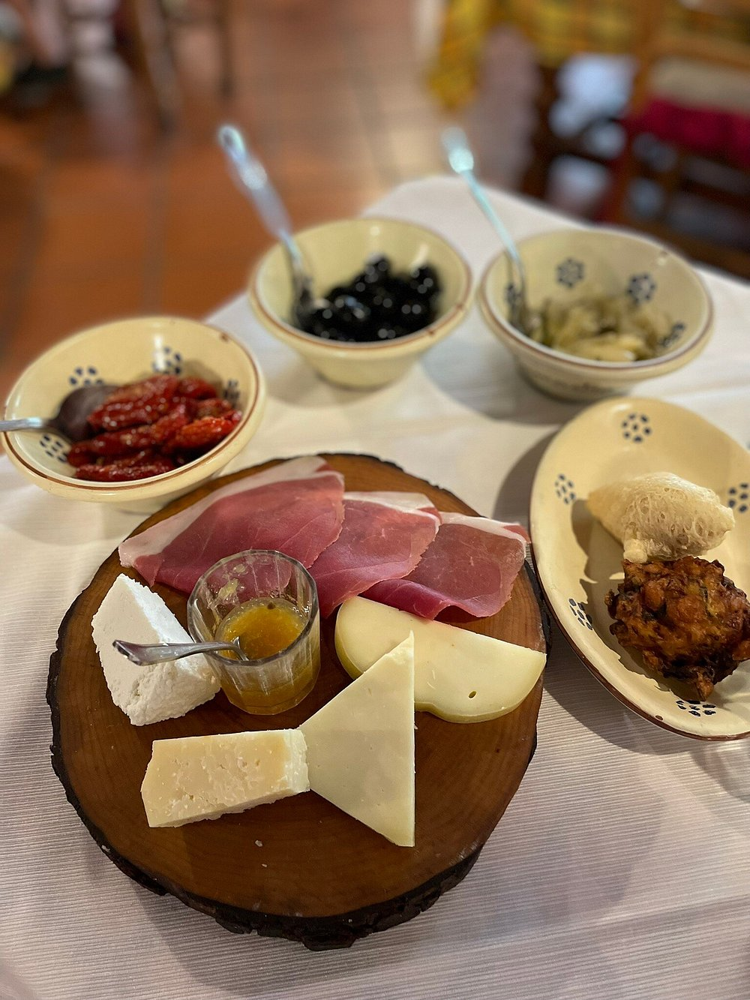
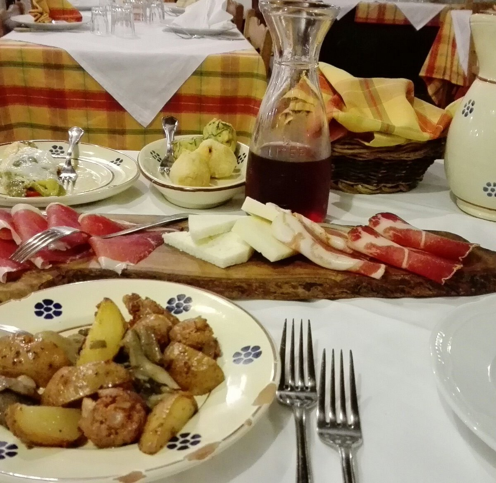
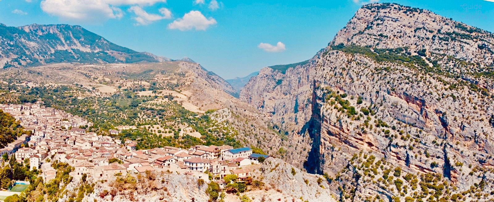

PER INIZIARE
ANTIPASTO KAMASTRA
Salumi, formaggi, sottoli e frittelle della tradizione.
SAPORI DELL’ORTO
Una selezione vegetariana tra verdure e formaggi.

CIVITA · CALABRIA · DAL 1995
01 / SPAZIO VIDEO O FOTOPIAZZA MUNICIPIO, 3/6 — CIVITA, CS — 0981 73387
01 / LA CUCINA
I sapori di Civita, le radici arbëreshe.
Anteprima narrativa · piatti e disponibilità da confermare.
02 / LA CANTINA
Un altro modo di conoscere questa terra.
LA SELEZIONE
Un invito a scoprire la cantina e i vini che accompagnano la cucina di Kamastra.
IL TERRITORIO NEL BICCHIERE
Un agrume legato al territorio, una firma da raccontare attraverso i prodotti di Casa Kamastra.
03 / GLI SPAZI
Archi, tavole e dettagli di ospitalità.



Kamastra nasce a Civita nel 1995, dall’intuizione di Enzo Filardi. Un luogo in cui la cucina diventa un incontro fra la terra calabrese e la tradizione arbëreshe.
Negli ambienti di una vecchia filanda, tra archi in mattoni e travi di legno, il ristorante custodisce il piacere di accogliere e condividere.
Il racconto continua nei piatti, nei gesti e nel legame con il Pollino.
VIENI A TROVARCI05 / IL TUO POSTO A TAVOLA
A Civita, nel cuore del racconto.
Per orari, disponibilità e prenotazioni,
contatta il ristorante.
